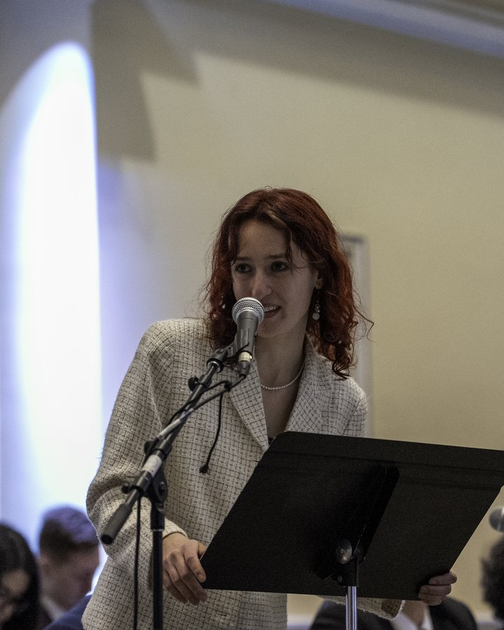
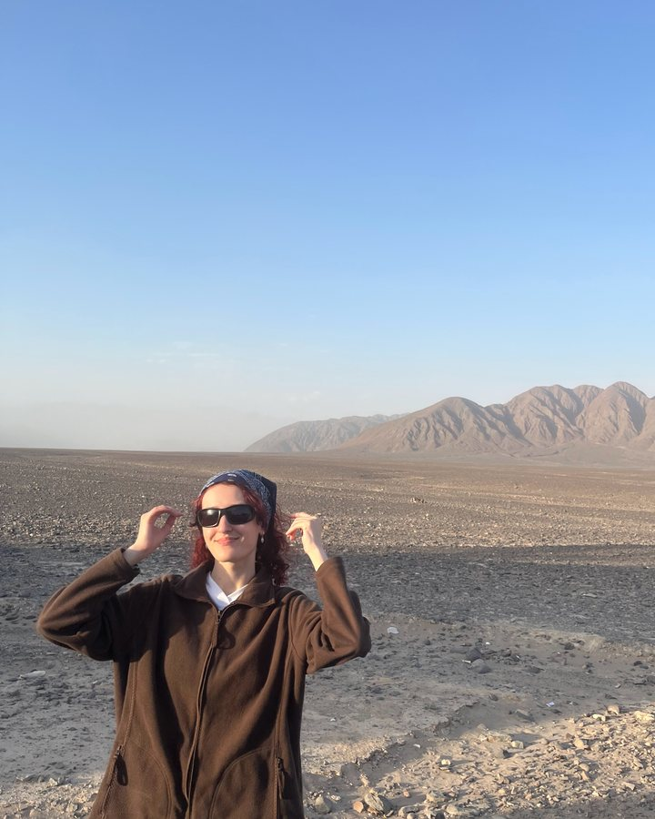
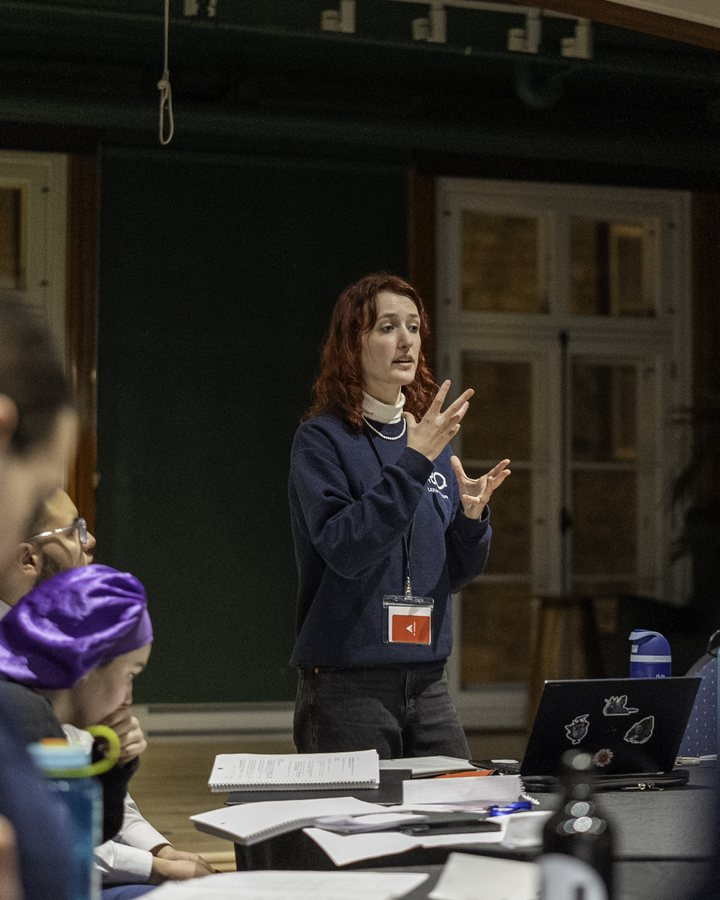
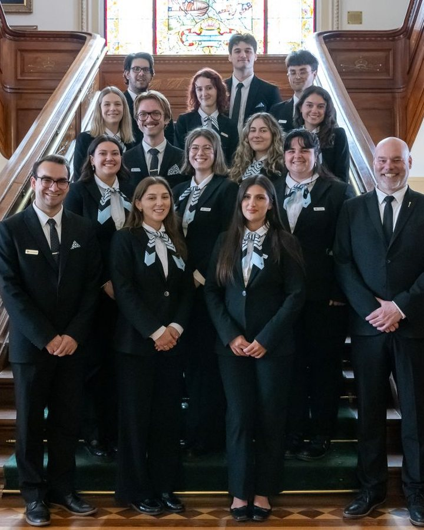
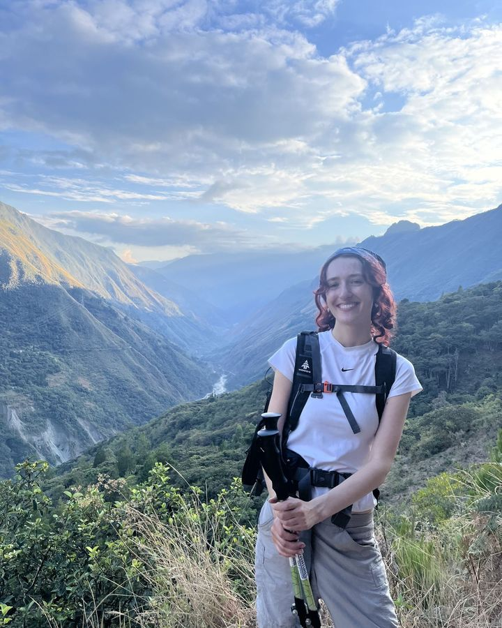
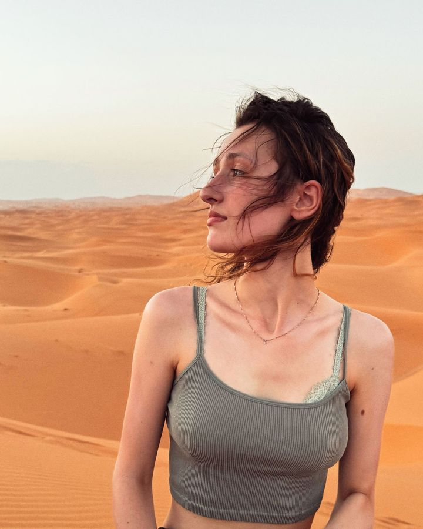
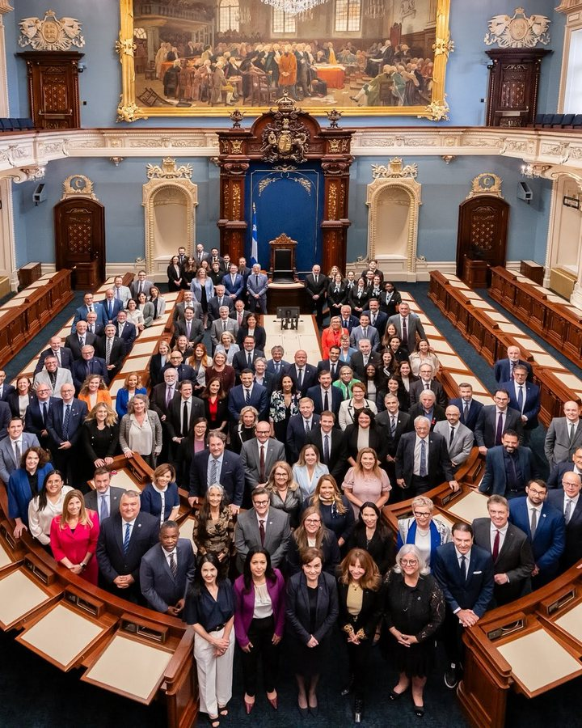
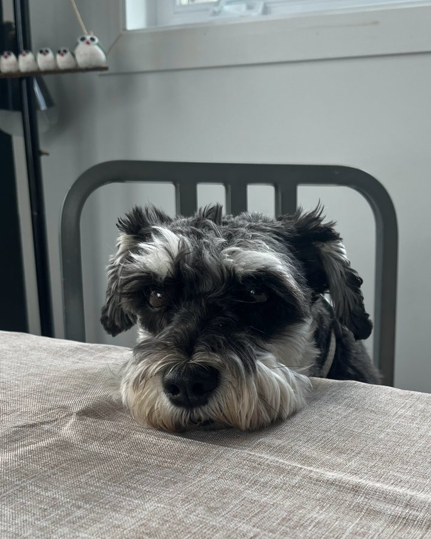

À propos
Je suis étudiante à la maîtrise en science politique avec mémoire à l'Université Laval, après avoir obtenu un baccalauréat en droit.
Passionnée et enthousiaste, je suis une grande lectrice et une voyageuse dans l'âme. Vous trouverez d'ailleurs mes lectures et mes voyages préférés dans la section Hors campus.
Je suis auxiliaire de recherche à la Chaire de leadership en enseignement des sciences sociales numériques (CLESSN) et à la Chaire du Canada en économie politique internationale. J'ai également été page à l'Assemblée nationale du Québec et recherchiste-étudiante à la Cour d'appel du Québec.
Depuis 2023, je m'implique au Parlement jeunesse du Québec, où j'occupe présentement le rôle de ministre des Institutions démocratiques. Je siège aussi comme administratrice à l'Association québécoise des jeunes parlementaires.








Engagement et bénévolat
- Ministre des Institutions démocratiquesParlement jeunesse du QuébecAuparavant : présidente de la Commission des institutions, déléguée internationale en Vallée d'Aoste, responsable de dossier au journal La Colline et députée
- Administratrice, partenariats étrangersAssociation québécoise des jeunes parlementairesAussi vice-présidente du comité des mini-simulations
- Coach, Annonce gouvernementale 360Jeux de la Communication 2027, délégation de l'Université Laval
- Bénévole-animatriceForum Québec PSP (Paix, Sécurité, Prospérité)
- Bénévole en recherche juridiqueÉtudiants Pro Bono Canada, Centre de pédiatrie sociale de Lévis
- Vice-présidente aux affaires socioculturellesSimulation francophone des Nations Unies de l'Université Laval
- Représentante des étudiantsGroupe de travail sur la liberté académique, Cégep de Sainte-Foy
- Membre du jury localPrix littéraire des collégiens
Expérience de recherche
- Auxiliaire de rechercheChaire de leadership en enseignement des sciences sociales numériques (CLESSN)
- Auxiliaire de rechercheChaire du Canada en économie politique internationale
- Recherchiste-étudianteCour d'appel du Québec
- Auxiliaire de rechercheChaire René-Dussault sur l'inclusion des traditions autochtones dans les programmes de formation en droit
- MembreCentre d'analyse des politiques publiques (CAPP), Centre de recherche interdisciplinaire sur la gouvernance mondiale (CIRGoM) et Centre pour l'étude de la citoyenneté démocratique (CECD)
Distinctions
- Bourse d'excellence à l'admissionFaculté de droit, Université Laval
- Médaille du lieutenant-gouverneur pour la jeunesseLieutenant-gouverneur du Québec
- Premier prix, concours d'écriture Plaisir d'écrireAMOPA
- Bourse pour la qualité du françaisASULF